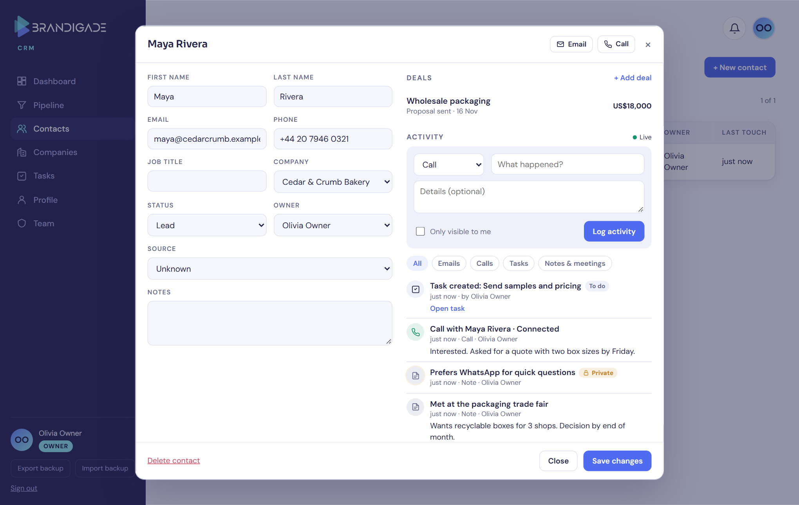
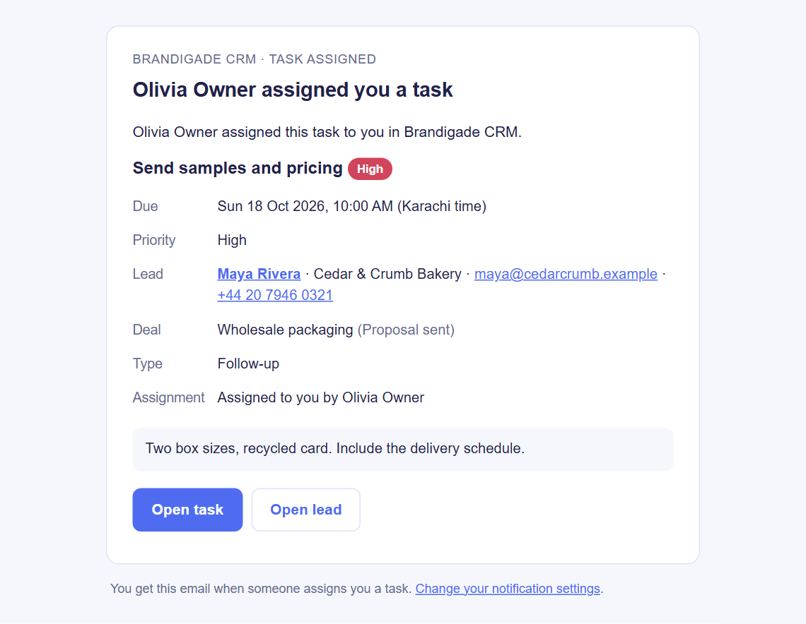
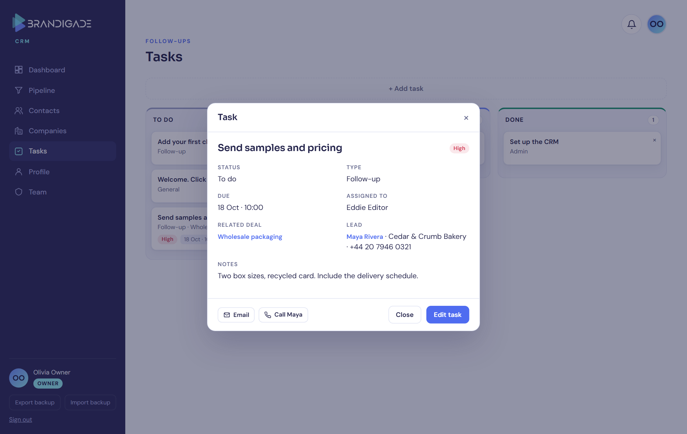
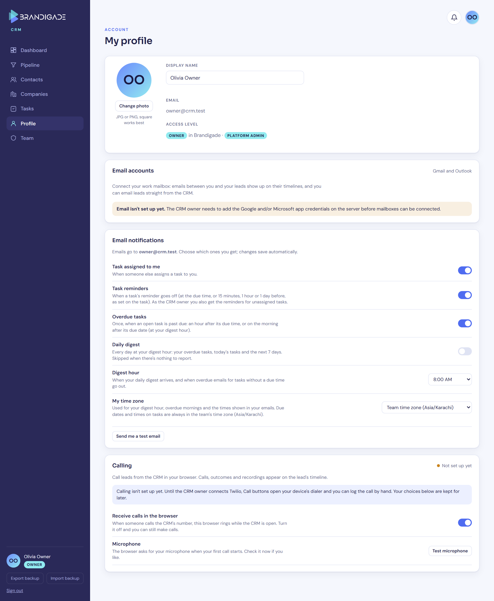
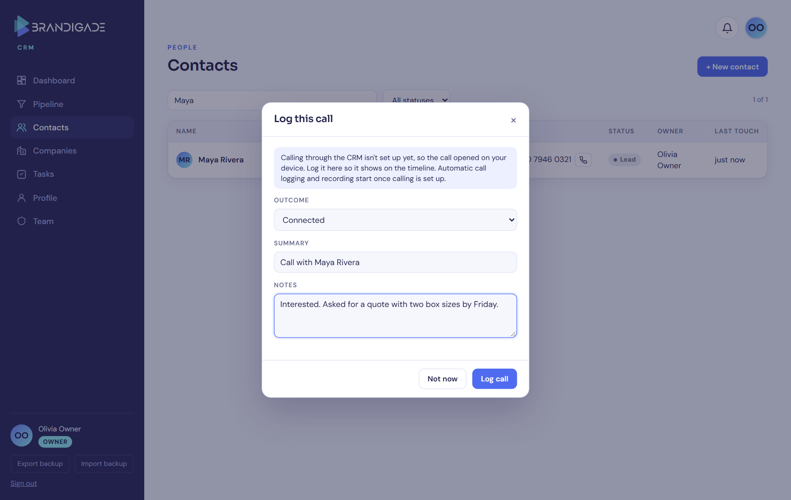
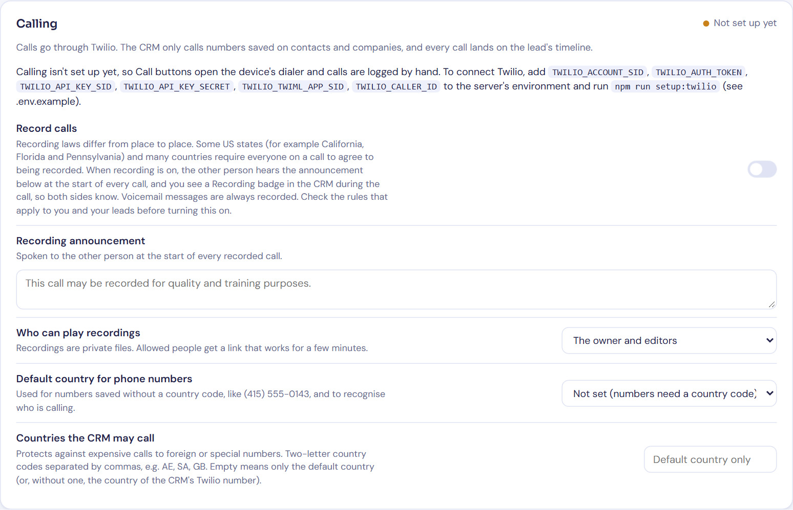
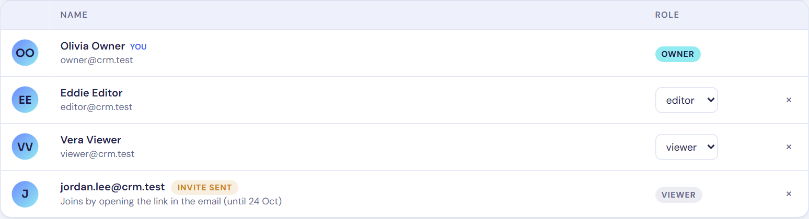
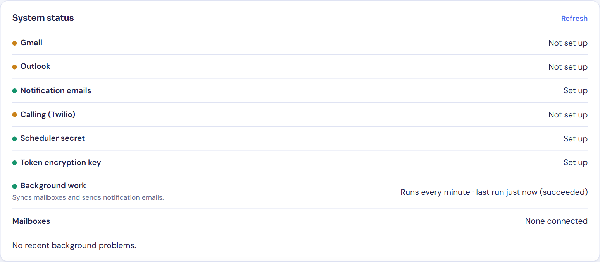

17 October 2026 · Code: private repository github.com/AbdulHadi404/brandigade-crm (commit 5b5566b)
1. Summary
The CRM now stores its data in proper database tables, and the database itself enforces who can see and change what. Four features were added on top: Gmail and Outlook email, task email notifications, calling from the browser, and one timeline per lead. The existing app was improved rather than rebuilt, and current records carry over.
Everything was tested on a local copy of the full system, including end-to-end tests in a real browser. Gmail, Outlook, Twilio and a real email sender need accounts and credentials that don't exist yet. Those parts are finished in code and tested against simulated providers, but none of them has been tried with a real account. The live database has not been changed yet: switching it over needs the owner's approval.
Area
Status
Database and permissions
Done. Tested locally, and the data copy was rehearsed on a copy of the live data. Not yet applied to the live database (waiting for approval).
Lead timeline
Done. Tested end to end locally.
Task email notifications
Done. Tested end to end locally: real emails, sent to a local mail catcher. Live use needs an email sender.
Gmail and Outlook
Built and tested against simulated Google and Microsoft responses. Needs Google and Microsoft app credentials. Not yet tried with a real mailbox.
Calling (Twilio)
Built and tested against simulated Twilio webhooks and a stand-in for the browser phone. Needs a Twilio account and number. No real call or recording has been made yet. Without Twilio, the Call buttons open the phone's own dialer and the call can be logged by hand; that part works now.
Security review
An independent review found 12 issues. All are fixed and covered by tests (details in section 4).
Private GitHub repository
Done. The full history is kept and it contains no secrets. The Brandigade organisation's repository was not touched.
Vercel hosting
The project is created and connected to the repository, and the server secrets are set. The first real deploy waits for approval to switch the live database.
2. What changes for current users
Data. Companies, contacts, deals, tasks and activities move from one shared document into separate tables, so two people editing at once no longer overwrite each other. Every record keeps its id, so old reminder links still open. The old document stays as it is, read-only, as a backup.
Two existing bugs fixed. Deals could not be saved (two elements on the page shared an id), and pressing Escape caused an error.
Timeline. Each lead, company and deal has one timeline of emails, calls, task changes and notes. A task can now be linked to a lead as well as to a deal.
Reminders. In-app reminders now work per person. Reminder emails follow each person's own settings on the Profile page.
Invites. New people still get an invite email. If the address already has a login, the person now joins from a link emailed to that address and chooses a new password at that point. That way nobody can get in by registering a teammate's address first.
Hosting. The app moves from GitHub Pages and Supabase Edge Functions to Vercel and Supabase. The new scheduler replaces the old reminder-email function, and the switch-over stops the old one, so no reminder is sent twice.
3. How the features work
All screenshots are real. They were taken on the local test setup, with sample records created through the app itself.
3.1 Lead timeline
Emails, calls, task changes and notes for a lead appear in one list, newest first, with filters by type. The entries are written by the database itself, so they can't be forged from the browser. An email that sits in two teammates' mailboxes appears once. Private notes, and emails from mailboxes their owners keep private, are visible only to their owner; this is enforced by the database, not just hidden on screen. The timeline updates live when a teammate adds something.

Figure 1. A lead with its deal and timeline: a task, a logged call with its outcome, a private note and a team note.
3.2 Task email notifications
Assignment email. Sent when someone else assigns a task to you. It includes the title, priority, due time in your time zone, the lead and deal, and direct links to them.
Other emails, each optional per person: a reminder at the time set on the task, one overdue email, and a daily digest at an hour of the person's choosing.
Scheduling. Supabase runs a job every minute that asks the CRM's server to send what is due; Vercel calls it once a day as a backstop.
Reliability. Every email has a unique key so it can't go out twice. Failed sends are retried, and lasting delivery problems are shown to the owner on the Team page.
Limits. At most 20 assignment emails an hour per person, and 400 notification emails a day for the whole CRM (adjustable), so the sender's daily quota can't be used up.

Figure 2. The assignment email Eddie received, delivered by the CRM's server to the local mail catcher.

Figure 3. The "Open task" link opens the task in the CRM, with the lead and deal linked.
3.3 Gmail and Outlook
Connecting. Each person connects their own mailbox on the Profile page by signing in with Google or Microsoft. The CRM never sees the password; the access tokens are stored encrypted.
Syncing. About every 2 minutes the CRM fetches new sent and received mail. Only emails that involve a lead are kept, and they appear on that lead's timeline. When a lead gets an email address, the last 90 days of mail with them are fetched. The first sync covers the last 30 days.
Sending. People can write to or reply to a lead from the lead's record; the email goes out from their own mailbox. Attachments are noted but not stored.
Privacy. A mailbox is shared with the team by default, or can be made private, and single emails can be made private. Nobody can read another person's private emails, including the owner.
Internal mail. Teammates' own addresses and the company's domain are never treated as leads, so internal mail is never pulled into the CRM.
Lost access. If access is withdrawn or expires, the mailbox shows "Reconnect" instead of failing silently.
This has not been tried with a real Google or Microsoft account yet. Until the credentials are added, the Profile page says so, as in Figure 4.

Figure 4. The Profile page: mailbox connection (shown as not set up yet), notification choices, and calling.
3.4 Calling
Once Twilio is connected:
Placing calls. Owners and editors call from the browser using the numbers saved on a lead, company or task. A call bar shows the call; afterwards a short prompt asks for the outcome and notes.
Logging. The call is logged automatically on the lead's timeline, with its duration.
Recording. Optional. The other person first hears an announcement. Recordings are copied into private storage and only the roles the owner allows can play them.
Incoming calls. They ring the browsers of people who opted in, and show the matching lead.
Protection against expensive calls. Only numbers stored on records can be called. Premium-rate and special numbers are refused, and so are countries the owner hasn't allowed (by default only the home country). Each person is limited to 60 calls an hour and 300 a day, and a call is cut off after an hour.
Until then (now): the Call buttons open the device's own dialer, and the outcome can be logged by hand (Figure 5). Live calling and recording will only be called working once a real call has been tested.

Figure 5. Logging a call by hand while Twilio isn't connected.

Figure 6. The owner's calling settings on the Team page.
3.5 Team page and system status
The owner invites people as editors or viewers and can cancel pending invites. The page also shows whether email, calling and the scheduler are set up, and any recent problems. It never shows secret values.

Figure 7. The team, with a pending invite to an address that already had a login.

Figure 8. System status on the local setup. The local notification sender is a mail catcher, not a real sender.
4. Security and reliability
Permissions are checked in three places: the database, the server and the screen. Viewers can't change anything, even by calling the database directly, and people who haven't been invited see nothing. Automated tests check both.
Secrets stay on the server. Only the public Supabase address and its public key reach the browser. Server secrets are stored on Vercel, and nothing secret is in the repository or its history.
Integrations are checked and retried safely. Twilio's webhooks are checked against Twilio's signature. Google and Microsoft sign-ins use one-time, short-lived codes tied to the person who started them. Every background job can safely run twice, and failures are retried with growing pauses.
Stored and displayed safely. Email content is cleaned before it is stored and shown in an isolated frame. The pages use strict browser security headers, and the two outside scripts are pinned to exact versions.
Review findings. All 12 issues the review found are fixed. The most serious was the invite problem described in section 2. Others included making sure removed members can't change email visibility, that teammates' mail can't be pulled into the CRM through a lead's address, and the call limits above.
5. Testing
What
How
Result
Code quality
Type checking, lint and a production build
Pass
Server logic
384 automated tests: email parsing and cleaning, mailbox sync, Google and Microsoft sign-in, notification rules and time zones, Twilio signatures and webhooks, background jobs, invites and permissions
Pass
Front end
67 checks in a simulated browser (forms, links from emails, reminders, page structure)
Pass
Database
4 test suites on a clean database: what each role can and can't do, timeline entries, and an upgrade from the old single document
Pass
End to end
20 tests in Chrome against the local system, as real users: creating records, live updates between two people, private notes, role limits that bypass the screen, server access checks, security headers, notification emails, invites and the calling fallback. Plus 2 calling tests with a stand-in for Twilio.
Pass (1 skipped by design)
Data switch-over
Rehearsed on a copy of the live data: 1 company, 1 contact and 5 tasks copied correctly; the original document unchanged
Pass
Continuous checks
GitHub runs the checks above (except end to end) on every push
Pass
Fully tested locally, end to end: the timeline, notification emails, invites, permissions, and calling without Twilio. Tested only with simulated providers: Gmail, Outlook, and Twilio calls and recordings. Waiting for credentials or approval: real mailboxes, real calls and recordings, a real notification sender, and the production deployment.
6. Hosting
GitHub. Private repository AbdulHadi404/brandigade-crm, with its full history. It is separate from the Brandigade organisation's repository, which is unchanged.
Vercel. Project brandigade-crm on the personal account, deployed from the repository's main branch. It runs in Tokyo, next to the Supabase database. The address will be https://brandigade-crm.vercel.app; until the switch-over it shows a holding page. The live CRM keeps running on GitHub Pages until then.
Hobby plan. Vercel's free Hobby plan is for personal, non-commercial use. Brandigade is a business, so the Pro plan ($20 per member per month) is the right one. Nothing has been upgraded or paid for; that is the owner's decision.
Built to fit Hobby's limits anyway. Hobby only allows a daily scheduled job, so the every-minute scheduler runs in Supabase instead, with Vercel's daily job as a backup.
7. What the owner needs to set up
Values go into Vercel (Project → Settings → Environment Variables), entered directly there rather than sent by email or chat. .env.example in the repository describes each one.
Item
Why and how
1. Approve the switch-over
This applies the new tables to the live database and copies the current records. The old version becomes read-only, the scheduler starts, and the CRM is deployed on Vercel and checked.
2. Vercel plan
Pro for business use (section 6).
3. Notification sender
For task emails and invites. The simplest option is the Gmail account and app password the CRM already uses (GMAIL_USER, GMAIL_APP_PASSWORD). The alternative is a Resend API key with a verified domain (RESEND_API_KEY, NOTIFICATION_FROM_EMAIL).
4. Supabase email (SMTP)
Supabase sends sign-up, invite and password-reset emails itself. Its built-in mailer only reaches the Supabase organisation's own members and only a few emails an hour. Set your own sender under Supabase → Authentication → SMTP; the same Gmail or Resend works.
5. Google (Gmail)
In Google Cloud:
Enable the Gmail API.
Set up the consent screen. Choose Internal if Brandigade uses Google Workspace. With External, Gmail access needs Google's app verification, and in testing mode connections expire every 7 days.
Create a Web OAuth client with the redirect address https://brandigade-crm.vercel.app/api/email/oauth/google/callback.
Then set GOOGLE_CLIENT_ID and GOOGLE_CLIENT_SECRET.
6. Microsoft (Outlook)
In Microsoft Entra:
Register an app with the redirect address https://brandigade-crm.vercel.app/api/email/oauth/microsoft/callback.
Add the delegated permissions openid, email, offline_access, User.Read, Mail.Read and Mail.Send.
Create a client secret.
Then set MICROSOFT_CLIENT_ID and MICROSOFT_CLIENT_SECRET, and optionally MICROSOFT_TENANT_ID to allow only your organisation.
7. Twilio (calling)
A paid Twilio account (a trial can only call verified numbers) and a phone number with Voice:
Create an API key, set the six TWILIO_* values, and run npm run setup:twilio, which connects the number to the CRM.
Check the call-recording consent rules for your country and your leads' countries before turning recording on.
8. Limitations and follow-ups
Not yet tried for real: Gmail, Outlook, real calls and recordings, a real notification sender, and the production deployment. Each should be tried once right after its credentials are added.
Gmail outside Google Workspace needs Google's verification of the app, which can take weeks.
Invites to existing logins. When someone joins from such an invite, anyone else signed in to that login is signed out and can't sign back in. Their current session can still read data for up to an hour, until it expires.
Deleting a lead or deal also deletes the notes that belonged only to it, including teammates' private notes on it. Emails, calls and task history are kept.
Storage. Call recordings use Supabase storage, which the free plan limits to 1 GB, so keep an eye on usage once recording is on.
Live data. No live data has been changed or deleted. The switch-over only adds tables and copies records, and the old document is kept.